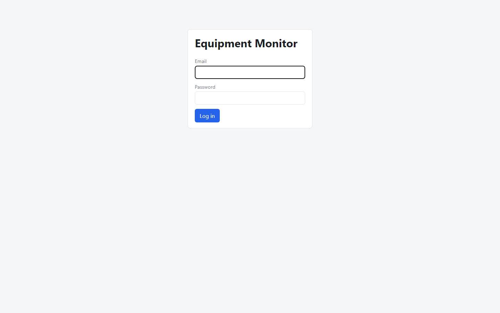
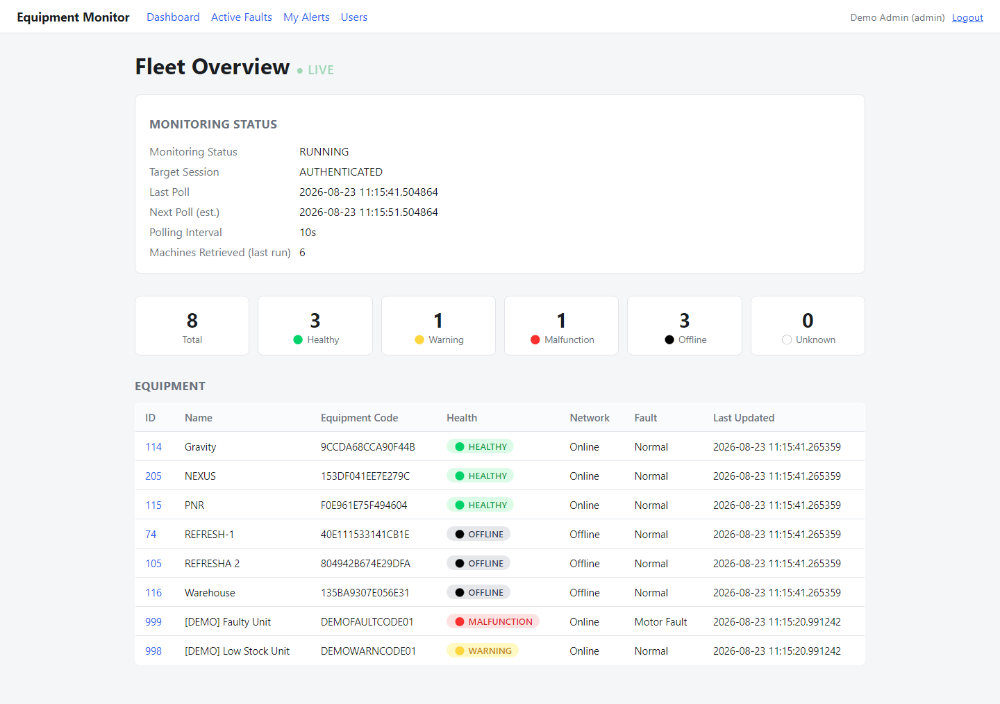
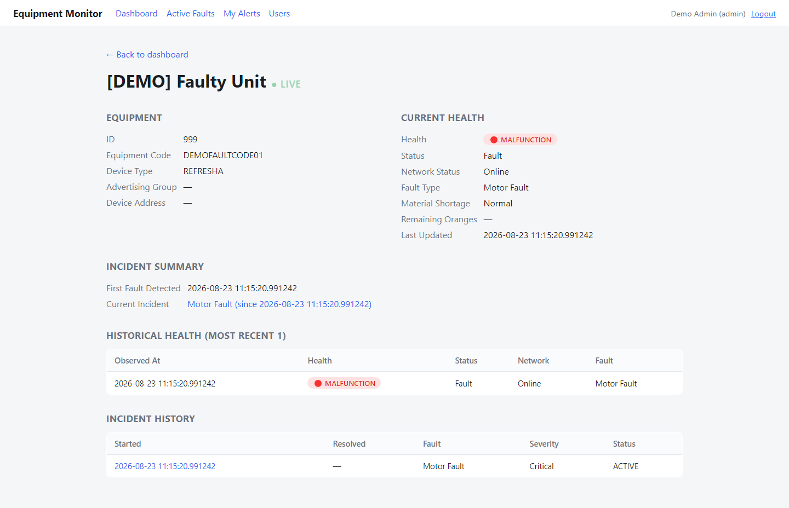
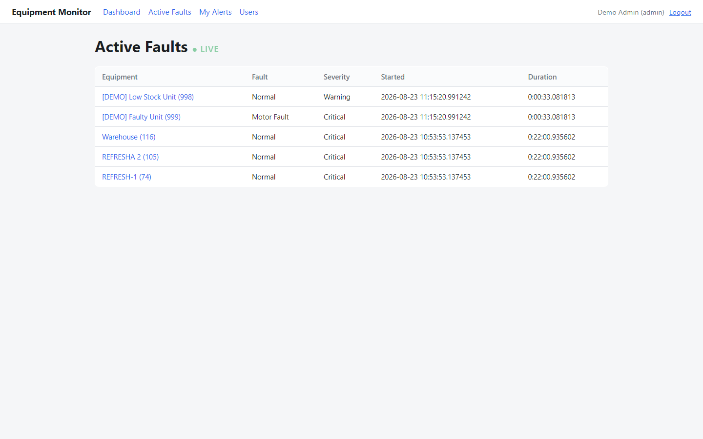
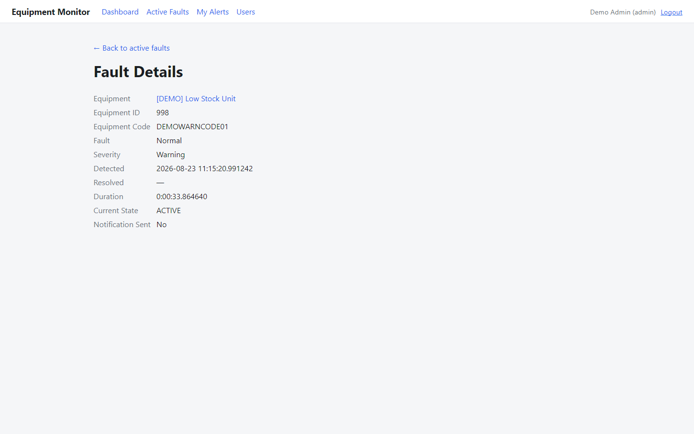
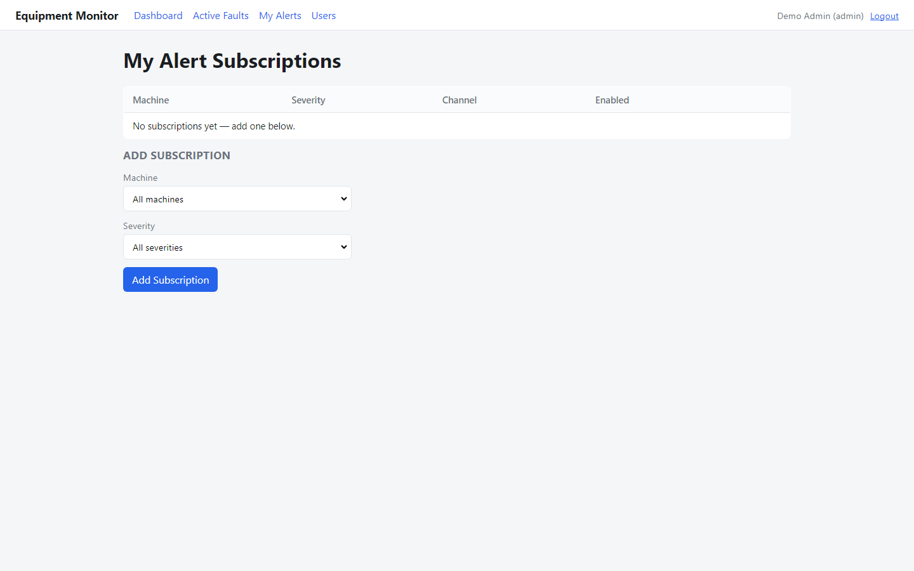
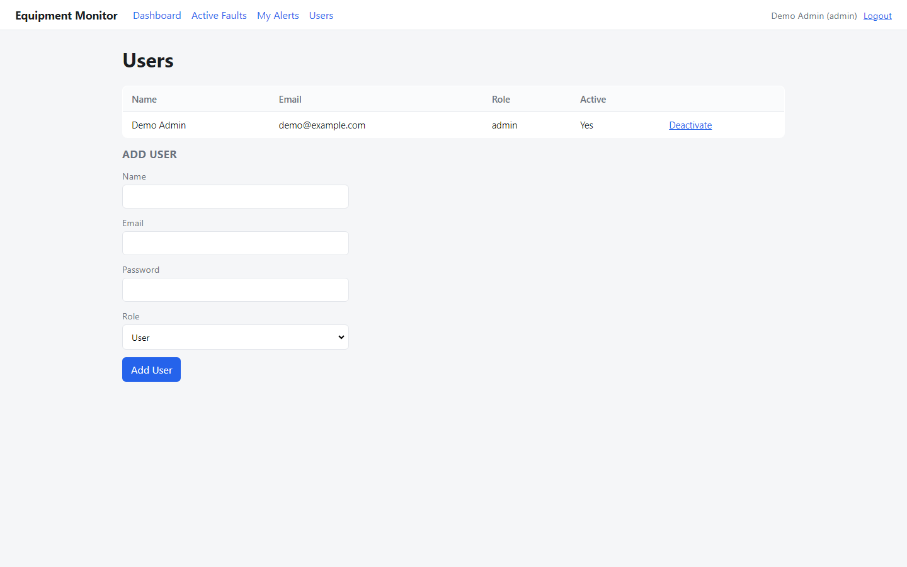

Session-aware monitoring, health evaluation, incident alerting, and a live web dashboard for a third-party equipment management application.
This version supersedes the same-day v1. Everything below was implemented and live-verified against the real target site after v1 was published.
AUTO_SOLVE_CAPTCHA) — a deliberate, disclosed reversal of the original spec's
own "never bypass CAPTCHA" requirement, specific to a confirmed bug in this one target. See
the rewritten §4.1 and §5.1.This application is a lightweight monitoring and alerting layer sitting in front of an existing, authenticated, third-party equipment-management web application (jwintell.com). It does not replicate that application. It periodically retrieves equipment status from its Equipment Management → Device Information section, converts the target's raw fields into a canonical health state via configurable rules, detects state changes exactly once per transition (never once per poll), stores full history, and notifies subscribers by email — with a live web dashboard for humans to watch the whole fleet.
The two requirements treated as non-negotiable throughout the build, per the original specification, were: authentication must be reused, not repeated (no login on every poll cycle, CAPTCHA handled only by a human), and a monitoring/technical failure must never be mistaken for an equipment fault (target unreachable, session expired, or extraction error are distinct technical states, never converted into a fake HEALTHY/OFFLINE/MALFUNCTION reading).
| Phase | Status | Notes |
|---|---|---|
| 1 — Target application discovery | Done | Confirmed live: login flow, session markers, and — critically — the underlying JSON list API the target's own UI uses, discovered via live network inspection rather than assumed. |
| 2 — Monitoring proof of concept | Done | Session reuse across repeated polls proven live (no re-login on repeat runs). |
| 3 — Database + state engine | Implemented, live-verified | Against SQLite only — no Postgres/Docker available in the build environment (see §5, §8). |
| 4 — Alerting | Implemented, live-verified | Incident-triggered notifications confirmed firing during live runs; no real SMTP send exercised (no credentials available). |
| 5 — Web dashboard | Implemented, live-verified | Real uvicorn process, hit with real HTTP requests; screenshots in §6 are captured from this live run, not mockups. |
| 6 — Production hardening | Not started | See §8. |
The system is deliberately layered so that if the target site's markup or API changes, only the target-facing layer needs to change — nothing downstream of it should need to know or care where equipment data came from.
Figure 1 — Component architecture. The Database is the single integration point between the monitoring worker (left/top path) and the web dashboard (right path) — they never talk to each other directly.
target_client.py,
lightweight_client.py, mapping.py, and selectors.py
know anything about jwintell.com's actual markup/API. Everything from the Extractor
onward works with normalized data.status field is
never treated as the application's health verdict — the Health Engine applies
independent, configurable rules (§4) to arrive at one of five canonical states.Figure 2 shows one full monitoring poll cycle exactly as implemented in
monitoring/worker.py — including the session-validity branch (which is
where the CAPTCHA-driven, human-in-the-loop authentication happens) and the
per-equipment state-transition branch (which is where the "one alert, not four" rule
is enforced).
Figure 2 — One monitoring poll cycle, including the session-validity/CAPTCHA branch and the four possible outcomes of a state-transition check.
.env; the database engine initializes
(tables created if absent).LightweightTargetClient.is_session_valid() issues one
plain HTTP GET to the target's authenticated home page and inspects whether it was
redirected to the login page — no browser involved._reauthenticate()
is the only place a Playwright browser is launched. Credentials are prefilled; the CAPTCHA
is left entirely to a human. The resulting session cookies are persisted to
storage_state.json, and the browser is closed immediately — it does not stay
open for polling.config/health_rules.yaml to produce one of five canonical states.UNKNOWN reading — from a missing or unrecognized field — takes
no incident action in either direction.AlertEngine.notify(), which resolves recipients and sends via
NotificationService.MonitoringRun audit row records the
cycle's outcome; the worker sleeps for the configured interval and repeats.The dashboard is a separate, independent process. On each page request: a signed
session cookie identifies the user (or redirects to /login); a role check
gates admin-only pages; the route reads directly from the same database the worker
writes to; a Jinja2 template renders the response. The fleet-overview, active-faults,
and equipment-detail pages carry a 5-second <meta http-equiv="refresh">
so an open browser tab reflects new polls without a manual reload.
Playwright was the correct starting point because the target application requires an
interactive login behind an image CAPTCHA. Once Phase 1 discovery revealed that the actual
equipment data comes from a plain JSON endpoint (not server-rendered HTML requiring JS
execution), keeping a full browser running for every subsequent poll stopped being
justified. The application was refactored mid-build (see the git history) to a hybrid:
Playwright is retained exclusively for the login flow and as a DOM-scrape fallback;
httpx handles all steady-state polling. This was verified live — zero
Playwright-owned Chromium processes existed across multiple full poll cycles once the change
was made, versus one long-lived visible browser window before it.
Update (v2): the login step itself was originally strictly human-in-the-loop, per
the original spec's explicit "never automate the CAPTCHA" requirement. On 2026-08-23 the
account owner identified that this specific target's CAPTCHA field is never actually
validated against the code shown in the image (any 4 characters are accepted) and explicitly
authorized automating past it on their own account. This is implemented as an opt-in flag
(AUTO_SOLVE_CAPTCHA, default false) rather than a default behavior
change — see §5.1 for the full disclosure and §7.4 for live verification evidence, including
the actual captured request/response.
Chosen over Flask/Django for its native async support (consistent with
the rest of the codebase), automatic request validation via Python type hints, and
built-in OpenAPI docs generation — useful even though the dashboard is server-rendered,
since the JSON endpoints (/api/monitoring/status) are self-documenting for
free. It is also explicitly the framework named in the original technology brief.
The original brief named React/Next.js. Node/npm were confirmed available in the
build environment, but a Next.js frontend means a second application, a separate build
pipeline, and a second dev server to run and keep in sync with the API — substantially
more surface area than this deployment's scale (1–100 internal users) justifies. This
was raised explicitly with the project owner before building, who confirmed the
server-rendered approach. The route layer (backend/api/*.py) still returns
structured data cleanly enough that a Next.js frontend could be layered on top later
without touching services/ or db/.
SQLAlchemy's ORM gives declarative models with real relationships and constraints, and — deliberately — the models in this project use only portable column types (no JSONB, no native ENUM) so the identical schema runs against both PostgreSQL (the specified production target) and SQLite. This was not a design accident: it made 70 unit/integration tests possible without any external database dependency, and made a full live demonstration of the worker + dashboard possible in an environment with no Docker/Postgres installed. §5 covers why this portability is a development convenience, not a production substitute.
The mapping from raw target fields (fault_status_text,
online_status_text, ...) to canonical health states lives in
config/health_rules.yaml, not in code. This directly satisfies the
requirement that new fault vocabulary must be addable without a code change, and keeps
the actual rule engine (services/health_engine.py) a thin, well-tested
evaluator rather than a place where business logic and mechanism are entangled.
Rather than adding passlib/itsdangerous/a full auth
framework, password hashing uses PBKDF2-HMAC-SHA256 via Python's built-in
hashlib, and session cookies are signed with hmac — both
well-understood, dependency-free primitives appropriate for this application's actual
threat model and scale. This keeps the dependency surface smaller without giving up
cryptographic soundness.
The original brief suggested APScheduler for polling. The implemented loop
(asyncio.sleep inside while True) is simpler and sufficient
for a single fixed interval; APScheduler's value (cron-style multiple schedules,
misfire handling, job persistence) isn't needed yet at one monitoring profile with one
interval. This is flagged in §8 as worth revisiting if multiple monitoring
profiles/schedules are added later.
AUTO_SOLVE_CAPTCHA=false in
.env.example), and is what runs for any target other than this one. It was
switched on here, on 2026-08-23, only after the account owner identified and explicitly
authorized exploiting a confirmed bug in this specific target's login form: the CAPTCHA
field's value is never actually checked against the image shown — any 4 characters are
accepted. Enabling this against a different target without the same kind of explicit,
case-by-case authorization would not be appropriate. See §7.4 for the captured evidence.fault_type or material_shortage_status
during this build, so the rule table in health_rules.yaml has not been
validated against a real-world fault string beyond the illustrative examples in the
original spec. The dashboard screenshots in §6 use clearly-labeled synthetic rows to
demonstrate the Warning/Malfunction badges for this reason.target_client.py for resilience if the JSON API ever breaks structurally,
but has never actually been exercised against a real failure — the JSON API path has
been reliable throughout.postgresql+psycopg2 driver, but this build environment has neither Docker
nor a native Postgres install. All verification — 70 automated tests plus the live demo
in §7 — used SQLite. See the dedicated discussion below.Concretely observed during this build, not theoretical:
fault_incident row referencing a non-existent equipment_id
succeeded with no error under the current SQLite setup (no
PRAGMA foreign_keys=ON is issued). PostgreSQL enforces this by default,
unconditionally.this_fault per-component detail (see the integration spec) is not
currently persisted anywhere durable — only the flat fault_type string is
stored on each incident.Base.metadata.create_all(). Fine for one evolving development schema;
not appropriate for a production cutover with existing data.smtplib mocked; no SMTP credentials were available in this environment to
send an actual message.SameSite=Lax attribute (which
already blocks the cookie from being sent on cross-site POST requests) rather than an
explicit per-request CSRF token. This is meaningful protection, but not a complete
substitute for one.db/seed_admin.py must be run
from a terminal — there is no in-app "first run setup" flow..env.MonitoringRun as FAILED and waits for the next
scheduled poll, rather than the spec's suggested 3-attempt backoff within the same
cycle.All screenshots below were captured with Playwright against the actual running
application (a real uvicorn process, backed by a real poll loop) during
this build — not recreated mockups. Three of the eight equipment rows visible
([DEMO] Low Stock Unit, [DEMO] Faulty Unit) are clearly-labeled
synthetic additions, included specifically so every health-state badge could be
demonstrated (see §5.1 on why no real fault has occurred yet). The other six rows —
NEXUS, PNR, Gravity, REFRESH-1, REFRESHA 2, Warehouse — are the real fleet.







| Test file | Count | Covers |
|---|---|---|
test_health_engine.py | 11 | Rule table: each spec example, priority order, case-insensitivity, UNKNOWN fallback |
test_state_manager.py | 10 | Incident open/escalate/resolve; reproduces the spec's own "4 faults, 1 alert" worked example exactly |
test_notification_service.py | 6 | SMTP interaction (mocked), console fallback, credentials never logged |
test_alert_engine.py | 12 | Recipient resolution matrix: admin/subscription/severity/equipment-scoping/dedup |
test_lightweight_client.py | 17 | Cookie loading, session-validity probe (rewritten in v2 — see §7.4), pagination, mid-fetch auth-expiry classification — via httpx.MockTransport, no real network |
test_backend.py | 17 | Auth, RBAC, all dashboard pages, subscription CRUD — via FastAPI's TestClient |
| Total | 73 | All passing at time of writing (v1 had 70 — 6 tests rewritten/added in v2 for the session-check fix) |
Get-CimInstance Win32_Process) across multiple
full cycles — zero Playwright-owned Chromium processes existed at any point, confirming
the hybrid lightweight-client design works as intended in practice, not just in theory.uvicorn process was hit with real
curl HTTP requests (not the in-process test client) — login, RBAC-gated
pages, and a "Last Poll" timestamp confirmed to advance between two requests 12 seconds
apart, proving end-to-end freshness rather than a cached/static response.| Item | Reason |
|---|---|
| Real PostgreSQL | No Docker/Postgres available in this build environment |
| Real SMTP delivery | No SMTP credentials available in this build environment |
| DOM-scrape fallback under a real API failure | The JSON API path has not failed during this build |
| Behavior under a genuine target-side fault | No real fault has occurred on the connected account |
Verified end to end from a genuinely cold state, not a mocked or simulated one: the saved session file was deleted entirely, then a single poll cycle was run and the actual network traffic captured directly from the Playwright page (password redacted before being written anywhere, including this report).
is_session_valid() -> False).POST https://www.jwintell.com/NgsEmfuaOv.php/index/login?url=... Content-Type: application/x-www-form-urlencoded __token__=e9e8c9c6fcfc2d18a99a569d4334780c &username=Refresha &password=***REDACTED*** &captcha=F2Y6 <- random, unrelated to the actual displayed image &keeplogin=1
GET https://www.jwintell.com/NgsEmfuaOv.php/device/device/index?...
Accept: application/json
X-Requested-With: XMLHttpRequest
-> HTTP 200, Content-Type: application/json
-> {"total": 6, "rows": [{"id": 205, "name": "NEXUS", ...}, ...]}
Zero human input occurred at any point in this sequence — no visible browser window, no wait, no manual CAPTCHA entry. Full capture (all headers, full equipment payload, password redacted) was saved for reference; it is not included in this repository as it contains live account data.
docker compose up -d &&
python -m db.init_db) once Docker/Postgres is available.Base.metadata.create_all()..env files.SameSite=Lax protection.seed_admin.py.this_fault
field (individual motor/sensor-level fault flags) is a strong candidate for a JSONB
column once on PostgreSQL — currently unused beyond the flat fault_type string.backend/api/
routes, if still wanted after using the server-rendered version.Two terminals are needed — the monitoring worker and the dashboard run as separate, concurrent processes (§2). Commands below are PowerShell, matching this project's Windows development environment.
python -m venv .venv .venv\Scripts\activate pip install -r requirements-dev.txt python -m playwright install chromium copy .env.example .env
Then edit .env: fill in TARGET_USERNAME/TARGET_PASSWORD,
and generate a WEB_SECRET_KEY:
python -c "import secrets; print(secrets.token_hex(32))"
Uses the DATABASE_URL override (§4.4) to point at a local SQLite file
instead of Postgres — this is the path used for all live verification in this report.
# Terminal 1 - one-time: create tables + first admin login $env:DATABASE_URL = "sqlite:///data/demo.db" python -m db.seed_admin --name "Your Name" --email you@example.com # Terminal 1 - start the continuous monitoring loop $env:DATABASE_URL = "sqlite:///data/demo.db" python -m monitoring.worker --loop
# Terminal 2 - start the dashboard (same DB) $env:DATABASE_URL = "sqlite:///data/demo.db" uvicorn backend.main:app --host 127.0.0.1 --port 8123
Then open http://127.0.0.1:8123.
docker compose up -d python -m db.init_db python -m db.seed_admin --name "Your Name" --email you@example.com
# Terminal 1 python -m monitoring.worker --loop
# Terminal 2 uvicorn backend.main:app --reload
No DATABASE_URL needed here — it falls back to .env's
DB_* values, which point at the Postgres container.
python -m monitoring.worker # single poll cycle, then exit (no --loop) python -m tests.tc_001_target_connection.run # live connectivity smoke test, no DB python -m monitoring.poc_runner # Phase 2 connectivity demo, no DB pytest tests/ --ignore=tests/tc_001_target_connection -v # 73 unit tests, no live site/DB/SMTP needed
Ctrl+C in each terminal. If running detached/in the background instead:
Get-CimInstance Win32_Process -Filter "name='python.exe'" |
Where-Object { $_.CommandLine -match 'monitoring.worker|uvicorn' } |
Select-Object ProcessId, CommandLine
Stop-Process -Id <id> -Force
.env flags| Flag | Effect |
|---|---|
HEADLESS | true: no visible browser at all, including for re-authentication (requires AUTO_SOLVE_CAPTCHA=true, or re-auth will simply time out with no human able to complete the CAPTCHA). false: a visible window opens for a human to complete the CAPTCHA when re-authentication is needed. |
AUTO_SOLVE_CAPTCHA | See §4.1/§5.1 — default-off, enabled here by explicit account-owner authorization specific to this target's known CAPTCHA bug. |
POLL_INTERVAL_SECONDS | Seconds between poll cycles. Lower values were used for real-time testing during this build; a more conservative value (e.g. 60) is recommended for routine/long-running use to reduce load on the target. |
DATABASE_URL | Optional override of the DB_* fields — e.g. sqlite:///./data/demo.db for a quick local run without Docker/Postgres (§4.4, §9.2). |
| Tool | Version | Category | Key properties / why used here |
|---|---|---|---|
| Python | 3.10 | Runtime | Async support, broad library ecosystem, single language across worker + backend. |
| Playwright | 1.47.0 | Browser automation | Cross-browser automation library; used here exclusively for the CAPTCHA login flow and as a DOM-scrape fallback — not for steady-state polling. |
| httpx | 0.27.2 | HTTP client | Async-native HTTP client with a cookie jar and redirect handling; powers all steady-state polling (no browser) and FastAPI's test client. |
| FastAPI | 0.115.0 | Web framework | Async, type-hint-driven request validation, automatic OpenAPI docs, dependency-injection system used for auth/RBAC/DB session wiring. |
| Uvicorn | 0.31.0 | ASGI server | Serves the FastAPI app; [standard] extras include uvloop/httptools for performance. |
| Jinja2 | 3.1.4 | Templating | Server-side HTML rendering for the dashboard — no client build step required. |
| python-multipart | 0.0.12 | Web | Required by FastAPI/Starlette to parse HTML form POST bodies (login, user/subscription forms). |
| SQLAlchemy | 2.0.35 | ORM | Declarative models + Core; the same model definitions run against both PostgreSQL and SQLite by using only portable column types. |
| psycopg2-binary | 2.9.9 | DB driver | Synchronous PostgreSQL driver used by SQLAlchemy for the production database target. |
| PostgreSQL | 16 (docker image) | Database | Specified production RDBMS. ACID, MVCC (non-blocking concurrent readers/writers), enforced foreign keys by default, native JSON/ENUM types. |
| SQLite | bundled (Python stdlib) | Database | Embedded, file-based; used for the automated test suite and the local/demo run described in this report. Not the production target — see §5.2. |
| PyYAML | 6.0.2 | Config | Loads config/health_rules.yaml — keeps health-evaluation rules editable without a code change. |
| python-dotenv | 1.0.1 | Config | Loads .env into process environment variables; keeps all secrets out of source code. |
| pytest | 8.3.3 | Testing | Test runner for all 73 unit/integration tests. |
| pytest-asyncio | 0.24.0 | Testing | Enables async def test functions (used by the lightweight-client tests). |
| hashlib / hmac / secrets (stdlib) | — | Security | PBKDF2-HMAC-SHA256 password hashing and HMAC-signed session cookies — no external auth dependency. |
| smtplib / email (stdlib) | — | Alerting | SMTP email delivery — no external mail library required. |
| Docker / docker-compose | — | Infrastructure | Containerized local PostgreSQL for development, as specified in docker-compose.yml. |
discovery/inspect.py One-off manual DOM/network capture tool docs/ Integration spec, this report monitoring/ config.py env-driven settings (DB, SMTP, web, target) models.py MonitoringState, EquipmentRecord, exceptions selectors.py target URLs / API paths / field maps mapping.py raw-row → canonical-field mapping (shared) lightweight_client.py httpx-based client — steady-state polling browser_manager.py Playwright browser/context lifecycle session_manager.py session-aware auth (reuse-first) target_client.py Playwright client (login/CAPTCHA + fallback) equipment_extractor.py canonical rows → validated EquipmentRecord validator.py zero-records guard worker.py real poll-cycle entry point poc_runner.py Phase 2 connectivity demo db/ models.py equipment, snapshots, incidents, users, ... base.py engine/session (incl. DATABASE_URL override) init_db.py, seed_admin.py setup CLIs config/health_rules.yaml configurable health-evaluation rules services/ health_engine.py raw fields → canonical HealthState state_manager.py incident dedup/escalation/resolution notification_service.py pluggable delivery channel alert_engine.py recipient resolution + message content backend/ FastAPI dashboard main.py, deps.py, security.py, templating.py api/ auth.py, equipment.py, alerts.py, users.py, monitoring.py templates/, static/ Jinja2 HTML, one stylesheet tests/ 70 automated tests + live test cases
Two entirely separate vocabularies are used throughout this application, and keeping them distinct is a core design rule (never let a technical failure masquerade as equipment health):
| State | Meaning |
|---|---|
| HEALTHY | Status/network/fault/material all nominal. |
| WARNING | Material shortage present, no active fault. |
| MALFUNCTION | Fault type reported and not recognized as "no fault". |
| OFFLINE | Network connection reported offline. |
| UNKNOWN | A required field was missing or an unrecognized value was reported — deliberately not treated as a fault (requirement #28). |
| State | Meaning |
|---|---|
AUTHENTICATION_REQUIRED | Session invalid/expired and re-authentication could not complete. |
TARGET_UNAVAILABLE | The target application could not be reached. |
EXTRACTION_ERROR | Data was reachable but failed to parse/validate. |
MONITORING_ERROR | An unclassified failure in the monitoring pipeline itself. |
None of the four technical states above ever writes to an equipment's
health state — they are recorded only on that cycle's MonitoringRun row.